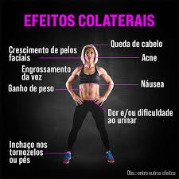
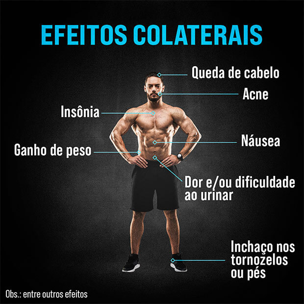

Ratos de Academia
“Rato de academia” é o termo com o qual se autodenominam os sujeitos viciados em exercícios físicos e preocupados em demasia com a busca da potencialização da musculatura corporal
a qualquer custo.
Muitos optam em ganhar massa muscular de uma forma não natural, e estamos aqui para falardos riscos de qualquer anabolizante
Os esteroides anabolizantes (EA) são drogas que têm como função principal a reposição de testosterona (hormônio responsável por características que diferem homem e mulher).
EFEITOS COLATERAIS EM MULHERES

Surgimento de pomo de adão
Engrossamento da voz
Diminuição de seis
Interrupção das menstruações
Aumento do tamonho do clitóris
Crescimento anormal de pelos no corpo
EFEITOS COLATERAIS EM HOMENS

Alterações comportamentais e de humor/
Alterações no sistema muscular, no sistema nervoso central e no cérebro
Euforia; durante esta euforia, os jovens podem ser estimulados à violência, ao vandalismo e ao crime
Depressão, que se manifesta após a euforia, quando aparecem a desilusão e a paranoia
Aumento da pressão arterial
Alterações cardiovasculares, que aumentam a chance de um enfarte do miocárdio ou de uma parada cardíaca